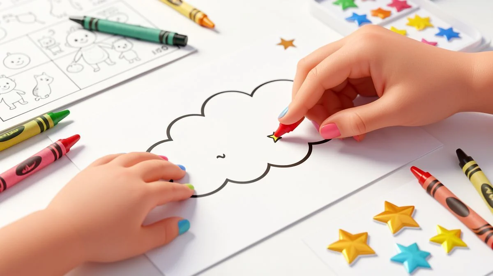
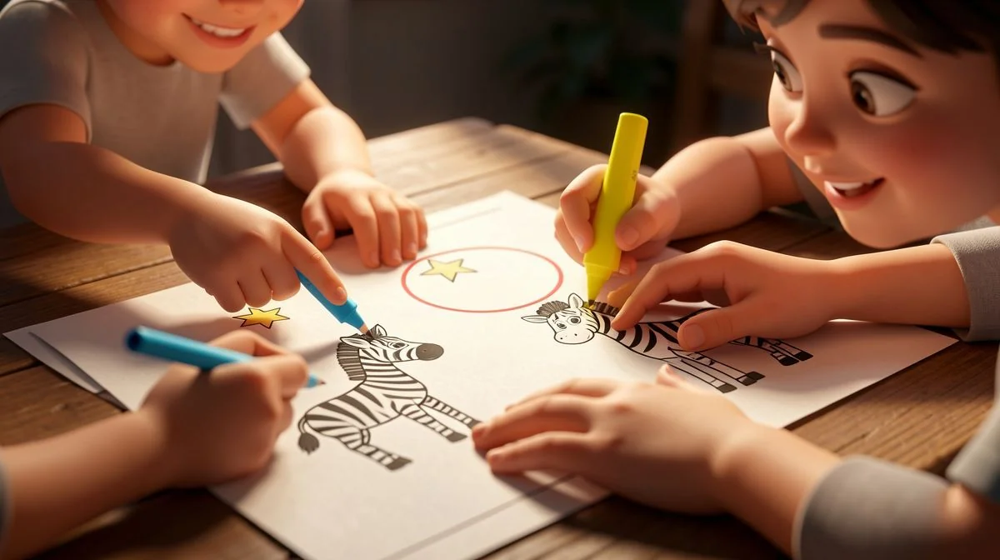
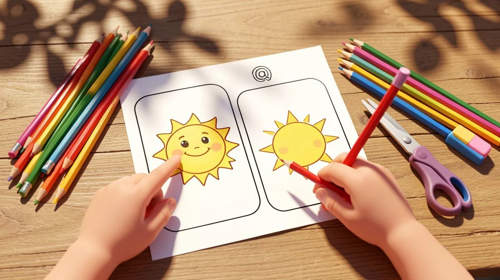
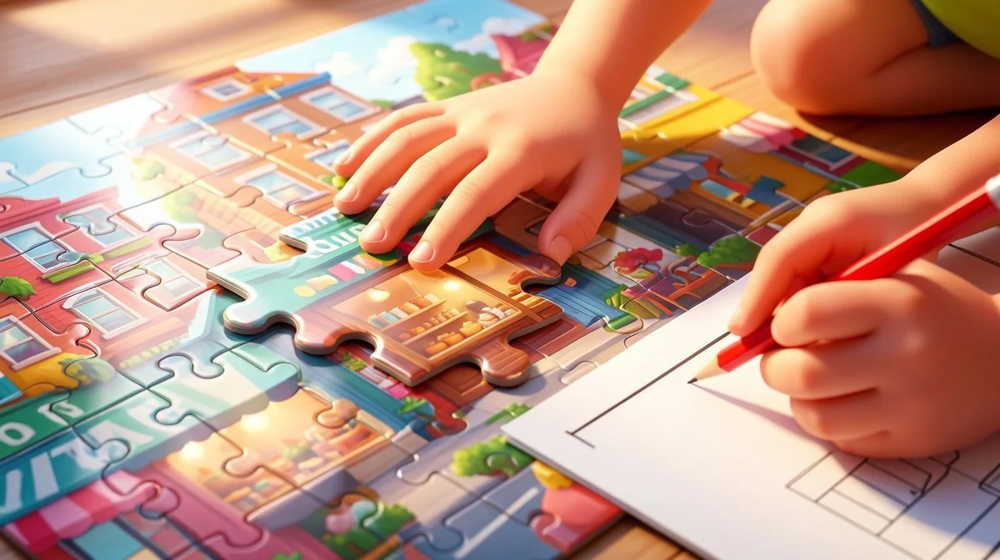
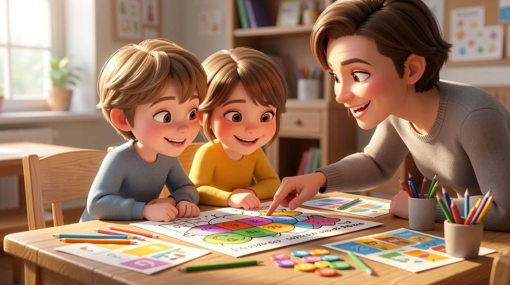

📑 Table of Contents
- Why Visual Discrimination Matters for Child Development
- Age-Specific Benefits of Spot the Difference Activities
- How to Implement Spot the Difference Activities Effectively
- Why We Recommend Spot the Difference | Picture Puzzle Visual Perception | Buildings Vol.1
- Creative Variations to Keep Spot the Difference Engaging
- Common Mistakes Parents Make with Visual Perception Activities
Why Visual Discrimination Matters for Child Development
Let's be real. We often think of learning as letters and numbers. But a huge part of a child's brain development happens long before they sound out their first word. It happens in how they see the world. Visual discrimination—the ability to identify similarities and differences in shapes, colors, patterns, and objects—is the silent engine driving so much of their early growth.
It's not just about playing games. This skill is the bedrock. When it comes to spot the difference (photorealistic) activities for kids, parents have many great options.
The Science Behind Visual Perception
Our brains are not cameras. They're interpreters. When a child looks at a page, their brain is working overtime to organize lines, curves, and spaces into meaningful information. This is visual processing. Spot the difference activities give that processor a targeted workout. They train the brain to scan, filter out irrelevant details, and focus on specific features.
It's like building a mental filing system for everything they see. What I've found works best is starting with the concrete. Kids need to handle this skill before it becomes automatic.
Connection to Academic Success
This is where it gets practical. Strong visual discrimination directly fuels classroom success. Think about it. Reading? It requires telling a 'b' from a 'd'. Math? It's seeing the difference between a '+' and a 'x' sign, or matching quantities. Spelling? Noticing the sequence of letters. A child who struggles to see details in pictures will almost certainly struggle with these tasks.
I've watched it happen. A student who breezes through spot the difference (photorealistic) activities for kids often has an easier transition to decoding text. The connection is that clear.
- Visual discrimination is foundational for reading and math skills. It's the precursor to letter and number recognition.
- Research shows it improves attention span and memory. The focused search strengthens neural pathways for concentration and recall.
One thing I love about this practice is its simplicity. You don't need fancy tools. You can practice with leaves in the park, socks in a drawer, or cereal pieces on the table. For more structured ideas, I share a bunch of hands-on activities here.
Long-Term Cognitive Benefits
The payoff isn't just for first grade. We're building durable thinking habits. When children regularly engage in detailed visual analysis, they're honing critical life skills: problem-solving, logical reasoning, and persistence. They learn a systematic approach—check the left side, now the right, compare the colors, note the shapes. This reduces frustration later.
- It builds a tolerance for challenge. They learn that the answer is there if they look carefully enough.
- It s independent learning. They rely on their own eyes, not just being told the answer.
- Early development reduces learning difficulties later. Catching and strengthening these visual pathways early can prevent a cascade of academic struggles.

It's about giving them confident eyes. For a deeper look at related cognitive skills, this article on puzzle benefits is a great next read. This is especially helpful for spot the difference (photorealistic) activities for kids.
Age-Specific Benefits of Spot the Difference Activities
Not all puzzles are created equal. What challenges a 5-year-old will bore an 11-year-old. The magic is in matching the activity to the child's developmental stage. Here’s how those spot the difference benefits break down by age. Tailoring is key.
Preschoolers (4-6): Building Foundational Skills
For this group, it's all about the basics. We're not looking for subtle shading differences. We want big, clear, concrete changes. A missing window. A door that's a different color. The goal is to build the concept of "same" and "different" and develop those early comparison muscles. Keep it joyful. If it feels like a test, you've lost them.
At this age:
4-6 year olds develop basic comparison and matching skills.
They learn to scan from left to right (hello, pre-reading skill!).
Their vocabulary grows as they describe what they see: "This one has a blue roof, that one has a red roof."
It’s a huge confidence booster to shout, “I found it!”
This is especially helpful for spot the difference (photorealistic) activities for kids.
Early Elementary (7-9): Enhancing Academic Readiness
Now the stakes get higher. This is prime time for academic skill-building. Children are reading, writing, and tackling more complex math. Their spot the difference puzzles should reflect that. We introduce more details, smaller changes, and a greater number of differences to find. The benefits here are directly transferable to the classroom.
- 7-9 year olds improve reading comprehension through detail recognition. The careful observation needed in a puzzle is the same skill used to notice key details in a story illustration or a science diagram.
- It strengthens visual memory—a must for spelling and copying from the board.
- It encourages strategic thinking. They start developing their own search patterns instead of looking randomly.
This is also a great age to introduce photorealistic images, as recommended by sources like Understood.org, to bridge the gap between playful practice and real-world academic material.
Upper Elementary (10-12): Developing Critical Thinking
Don't think they've outgrown it! For older kids, these activities evolve into sophisticated critical thinking exercises. The differences become extremely subtle—a change in shadow, one fewer brick in a wall, a slight variation in texture. It becomes less about simple perception and more about analysis and deduction.
For the 10-12 crowd:
10-12 year olds strengthen problem-solving and persistence.
They learn to manage frustration when a difference is elusive.
It reinforces the concept that careful, repeated examination yields results—a vital lesson for tackling multi-step math problems or research projects.
It can be a fantastic, screen-free collaborative activity. Pair them up and watch them debate and discuss where the difference might be.

This kind of focused work supports executive functioning skills that are for middle school success. You can find more resources suited for this age group on our main products page.
How to Implement Spot the Difference Activities Effectively
Let's be real. You can have the best resource in the world, but if you don't use it right, it's just another worksheet. I've seen it happen. The key is in the setup and the support you give. It's not about finding the answers for them. It's about guiding their eyes and their thinking.
What I've found works best is a blend of structure and flexibility. You need a plan, but you also need to read the room. Is the child engaged? Frustrated? Bored? Your implementation changes in that moment.
Setting Up the Learning Environment
This step is everything. A chaotic space means a chaotic mind, and visual perception needs focus. First, find a quiet spot. Good lighting is non-negotiable—glare on a page is a nightmare for spotting subtle differences. I always have my kids sit at a clear table, maybe with a clipboard to keep the image steady.
Minimize distractions. That means putting away other toys, turning off the TV, and yes, silencing that tablet. We're training the brain to attend to specific visual details. You can't do that with a screen beeping in the background. One thing I love about a well-set environment? It signals that this is important, focused time. That mental shift matters.
Step-by-Step Guidance for Beginners
Never just hand a child a spot the difference (photorealistic) puzzle and walk away. That's a recipe for frustration. Start together. Here's my go-to method:
- Scan the Big Picture: "Tell me what you see in this photo." Let them describe the building, the scene. This builds context.
- Find One Together: Point out a very obvious difference. "Look at the window on the left. Now look at the right picture. What's different about it?" Celebrate that first find!
- Systematic Search: Teach them a method. "Let's look from top to bottom, like a scanner." Or "Let's check all the doors first, then all the windows." This prevents random, frantic looking.
Use verbal cues. Ask, "What's bigger? What's a different color? Is something missing?" This helps them articulate what their eyes are seeing. If they struggle, narrow the field. Use your finger to frame a small section of the image. Break it down.
Progress Monitoring Techniques
How do you know it's working? Look beyond the finished puzzle. I keep a simple mental checklist:
- Speed vs. Accuracy: Are they rushing and missing things? Slowing down is progress.
- Method: Are they still looking randomly, or are they starting to scan in rows?
- Vocabulary: Are they saying "that thing" or are they naming objects? "The chimney is missing a brick" is a huge win.
Jot down notes. "Needed help with subtle shadow differences." That tells you what to praise and what to gently practice next time. Maybe you focus on contrast and shading in your next art lesson. The goal is gradual independence. The day they find a tricky one without a single hint? Magic. You can see their confidence solidify right in front of you.

Why We Recommend Spot the Difference | Picture Puzzle Visual Perception | Buildings Vol.1
Okay, full disclosure. I'm picky about the resources I use in my classroom and recommend to parents. After fifteen years, I've seen a lot of fluff. So when I find something that genuinely works, that saves me time and actually helps kids learn, I get excited. This resource is one of those finds. It's not just another puzzle pack. I was looking for activities that moved beyond cartoons. I wanted real-world relevance. That's exactly what this delivers.
What Makes This Resource Special
The photorealistic images are the star. They're not generic clipart. We're talking detailed photos of real buildings—brickwork, windows, architectural details. This matters. It trains kids' eyes for the kind of observation they need in science (comparing diagrams), social studies (analyzing historical photos), and even on everyday walks. It bridges the gap between a game and an academic skill.
The progression is brilliant. It starts with achievable challenges and thoughtfully ramps up the difficulty. This prevents that "I can't do it" shutdown we all want to avoid. The building theme is consistently engaging, especially for kids who love construction or travel. It feels like exploring the world, not doing homework.
Educational Value Beyond Entertainment
Sure, it's fun. But the learning packed into these pages is serious. Every puzzle is a workout for visual discrimination, focus, and attention to detail. Kids are practicing patience and perseverance. They're learning a systematic approach to problem-solving.
I've used these puzzles as a calm morning starter activity. I've used them in small groups where kids collaborate and describe differences to each other, building language skills. The versatility is a huge plus for any educator or parent. It's a targeted tool for visual perception that fits into so many parts of the day. For more foundational activities, you can always explore our collection of free visual perception sheets to build up to this.
Practical Classroom Applications
In my room, this resource isn't just for "fast finishers." I integrate it. Here’s how:
- Theme Connection: Studying communities? Use the building puzzles to spark discussion about urban vs. rural structures.
- Writing Prompt: "You found the missing door. Write a story about where it leads."
- Partner Work: One child describes a difference without pointing, the other has to find it. Hello, communication skills!
It's adaptable for different ages and abilities. For a younger child or one struggling, we might just focus on finding 3 differences. For an older child needing a challenge, I'll set a timer or ask them to find all differences and then categorize them (color, shape, missing object). The spot the difference (photorealistic) challenge is the core, but you can build so much around it.
It's a springboard. If you're looking to expand your toolkit with resources that offer this kind of depth, our main products page has other curated sets that follow this same philosophy of embedded learning.

Look, my bottom line is this: it's a thoughtfully designed, educationally sound resource that does what it says it will do. It develops skills in a way kids enjoy. For the price of a coffee, it's a no-brainer addition to your teaching or parenting toolbox. You can check out Spot the Difference | Picture Puzzle Visual Perception | Buildings Vol.1 on TPT to see the specific images and level progression for yourself.
It’s the kind of practical, effective material I wish I had more of, and it perfectly complements other strategies for supporting childhood cognitive development.
Creative Variations to Keep Spot the Difference Engaging
Let's be real. Kids can get bored if you hand them the same type of worksheet every time. The magic happens when you mix it up. I've seen a child who groaned at a "spot the difference" page light up when I presented the same puzzle with a simple twist. It’s all about keeping their brains on their toes.
Timed Challenges for Older Children
Once the basic skill is there, add a clock. Not to stress them out, but to build focus. I’ll say, "Okay, you found five last time. Think you can beat your record in two minutes?" The energy shifts completely. It becomes a game against themselves. What I've found works best is to start generous with time, then slowly shrink the window. This builds processing speed naturally. They stop gazing out the window. They lean in. It works wonders for focus.
Collaborative Group Activities
Turn it into a team sport. In my classroom, I'll sometimes project a huge "spot the difference" image and split the kids into teams. The rule? You have to whisper your find to your team before marking it. The room fills with this hushed, excited buzz. They learn to communicate precisely—"No, the missing brick is on the left tower, near the bottom!" It’s not just about seeing.
It’s about describing. Social skills and visual perception grow together. One thing I love about this is how the stronger observers naturally start helping the others. Everyone wins.
Cross-Curricular Connections
This is where the learning deepens. Don't just find the differences. Talk about the picture. If you're using a spot the difference puzzle of buildings, you've got a geography or history lesson right there. "What kind of building is this? Where in the world might we see architecture like this?" Connect it to a story you're reading or a social studies topic.
I once used a puzzle of a medieval castle during our fairy tale unit. The kids weren't just looking for a missing flag; they were discussing why the walls were so thick. The activity becomes a doorway. It builds context. And context makes knowledge stick. You don't need special materials for this. Just a curious conversation.
Common Mistakes Parents Make with Visual Perception Activities

We all want to help. But sometimes, with the best intentions, we accidentally get in the way of the learning process. I've made these mistakes myself early on. Watching a child scan the same spot for the tenth time is tough! But stepping back is often the best help you can give.
Rushing Through the Process
This is the big one. We live in a fast world. We see our child staring and our instinct is to point. "It's right there!" Resist that urge. True visual discrimination needs that quiet, uninterrupted observation time. When we rush them, we teach them to rely on our eyes, not to train their own.
Let them wander. Let them get a little frustrated. That cognitive struggle is where the new neural pathways are built. If they truly hit a wall, ask a guiding question: "Have you checked the corners?" or "Let's look at just the left side together." Slow down. It pays off.
Focusing Only on Speed
Praising speed over accuracy sends the wrong message. If you constantly celebrate who found the differences fastest, you're valuing haste over careful observation. I’ve seen kids start guessing randomly just to be first. Instead, praise the tricky one they stuck with. Say, "I'm impressed you noticed that tiny shadow change!" This reinforces that details matter. Accuracy is the goal. Speed comes later, and only if it doesn't sacrifice thoroughness. It's a skill for life, not a race.
Neglecting Verbal Processing
The eyes see, but the brain needs to label. This is huge. When a child finds a difference, don't just let them point. Ask them to tell you what it is. "The window is open in this picture but closed in that one." This verbal description cements the perception. It connects the visual cortex to the language centers.
For younger kids, it builds vocabulary. For all kids, it strengthens memory and comprehension. If they can’t describe it, they might not have truly processed it. Turn the activity into a mini-narration. You'll be amazed at the difference it makes in their overall attention to detail. Talk it out. Always.
Ready to Enhance Your Teaching?
Explore our premium educational resources:
🏷️ Related Tags
Frequently Asked Questions
At what age should children start spot the difference activities?
Children as young as 4 can begin with simple, obvious differences. Start with 2-3 clear variations and gradually increase complexity as their skills develop.
How often should children practice visual discrimination activities?
2-3 times per week for 10-15 minutes is ideal. Regular, short sessions are more effective than occasional long sessions for skill development.
Can spot the difference activities help children with attention difficulties?
Yes, these activities can improve focus and attention span. The structured visual search helps train sustained attention in a engaging, low-pressure format.
What makes photorealistic images better than cartoon versions?
Photorealistic images develop real-world observation skills and prepare children for academic tasks that require detailed examination of photographs, diagrams, and illustrations.
How do I know if a spot the difference activity is too difficult for my child?
If your child becomes frustrated within 2-3 minutes or needs constant help finding differences, the activity is likely too challenging. Look for resources with adjustable difficulty levels.
📚 You Might Also Like
Explore more articles on similar topics


Spot the Difference | Picture Puzzle Visual Perception Activity | Streets Vol.4
📚 Loved this article?
Explore our free educational resources and premium printables.
🎁 Free Download
Shikaku
Get it now →